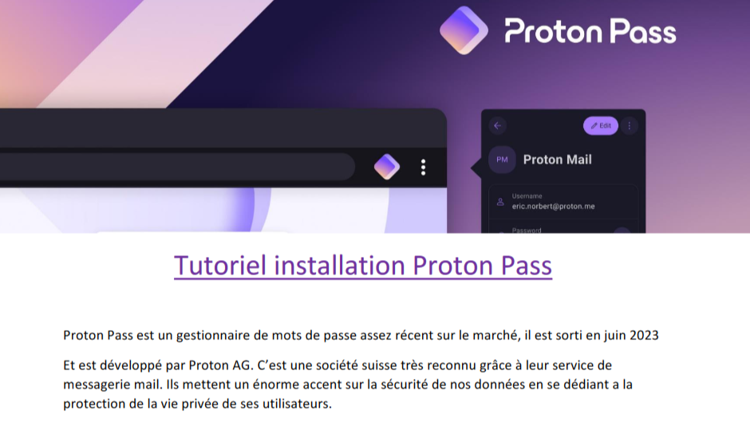

Outils de Maintenance
Configuration d'une clé USB multi-bootable avec antivirus, live
Debian, utilitaires de partitionnement et comparatif de gestionnaires de mots de passe.
USB Bootable
Maintenance
Sécurité
Voir le projet →
Travail Collaboratif
Déploiement de Nextcloud avec intégration LDAP, configuration des
partages et gestion des utilisateurs pour le travail collaboratif.
Nextcloud
LDAP
Collaboratif
Voir le projet →
Administration Windows
Configuration d'un serveur Windows, mise en place d'Active
Directory, DNS et DHCP pour la gestion centralisée des utilisateurs.
Windows Server
AD
DNS
Voir le projet →
VPN IPSec Cisco
Configuration de tunnels VPN IPSec entre sites, sécurisation des
communications et gestion des clés de chiffrement.
IPSec
VPN
Sécurité
Voir le projet →
Redondance Infrastructure
Mise en place de la redondance avec STP et EtherChannel,
optimisation de la disponibilité et de la performance du réseau.
STP
EtherChannel
Redondance
Voir le projet →
Supervision Nagios
Installation et configuration de Nagios pour la supervision des
services, mise en place d'alertes et monitoring des performances.
Nagios
Monitoring
Alertes
Voir le projet →